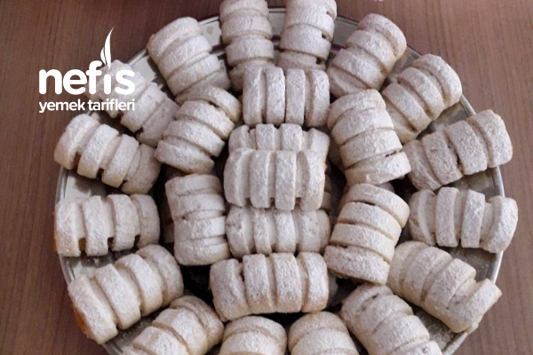

Elmalı Kurabiye Tarifi

Elmalı Şerit Kurabiye Tarifi İçin Malzemeler
- 250 gr oda sıcaklığında tereyağı
- 1 su bardağı nişasta
- 1 su bardağı pudra şekeri
- 2 dolu yemek kaşığı yoğurt
- Yarım çay bardağı sıvı yağ
- 1 tane yumurta
- 1 paket vanilya
- 1 paket hamur kabartma tozu
- 5 su bardağı un (gerekirse çok az ilave edilir)
İç Malzemesi;
- 5 tane elma
- 3 yemek kaşığı şeker
- 1 silme yemek kaşığı tarçın
Üzeri için;
Elmalı Şerit Kurabiye Tarifi Nasıl Yapılır?
Merhaba arkadaşlar sizlere hem şekil olarak, hem de lezzet olarak çok güzel bir kurabiye tarifim var 👌 😉 umarım beğenirsiniz 🤗🌹
- Öncelikle iç harcı için elmaları soyup rendeleyin tencereye alıp üzerine şeker ve tarçını koyup elmalar yumuşayıncaya kadar pişirin, altını kapatın.
- Yoğurma kabına tüm malzemeleri alıp azar azar un ilave ederek kulak memesi kıvamında bir hamur yoğurun.
- Hamurdan mandalina büyüklüğünde bir beze alın, önce rulo yapıp elle ezin ve oklava ile açıp inceltin.
- Sonra bıçakla kenarlarındaki eğrilikleri düzeltip ince şeritler kesin ve ön tarafta kalan kısma elmalı harcı yerleştirin.
- Daha sonra sarıp bir parmak boyunda kesin. Yağlı kağıt serilmiş tepsiye yerleştirin.
- Bütün hamuru bitirdikten sonra önceden ısıtılmış 180 derece fırında üzeri hafif pembeleşinceye kadar pişirin.
- İyice soğuduktan sonra üzerine pudra şekeri serpin.